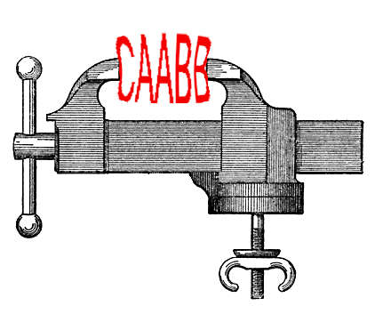

46th ICPC World Championship · Problem Y

Infinite Compression Plan Consortium (ICPC) has developed a new, great data compression strategy, called “Don’t Repeat Yourself” (DRY). DRY works on a string of characters, and if the string contains two consecutive instances of the same substring, it simply removes one of them. For example, in the string “alfalfa seeds”, it could remove one of the two “e” substrings in “seeds”, and one of the two “lfa” substrings in “alfalfa”, resulting in “alfa seds”. DRY can also take advantage of previous removals — for instance, in the string “seventeenth baggage”, it will first remove the duplicate “e” in “seventeenth” and the duplicate “g” in “baggage”, resulting in “sevententh bagage”, and then remove the duplicate “ent” in “sevententh” and “ag” in “bagage”, resulting in “seventh bage”.
If there are multiple choices of repeating consecutive substrings to remove, DRY should choose in a way that results in the shortest possible final string. For example, in the string “ABBCDCABCDCD”, DRY has two choices — either removing the repeated “B” near the beginning, or the repeated “CD” at the end. If the “B” is removed, then DRY will be able to remove the repeated “ABCDC”, resulting in “ABCDCD”, from which the “CD” at the end will finally be removed, resulting in “ABCD”. However, if DRY removed the “CD” at the end first, it would be left with “ABBCDCABCD”, from which only the repeated “B” can be removed to obtain “ABCDCABCD” — and from that string nothing more can be removed. So, the correct choice for DRY is to begin by compressing the double “B”, and to finally end up with “ABCD”.
ICPC observed that DRY obtains the best results on binary strings — that is, strings composed only of zeroes and ones. So, it has tasked you with implementing the best possible DRY algorithm working on binary strings. For any binary string, you should output a shortest string that can be obtained by repeatedly applying DRY to it.
The input consists of a single line containing a nonempty string of length less than or equal to 105, consisting only of zeroes and ones.
Output one line, containing a shortest possible result of running DRY on the input string. If there is more than one possible shortest result, any one will be accepted.
1111
1
101
101
10110
10